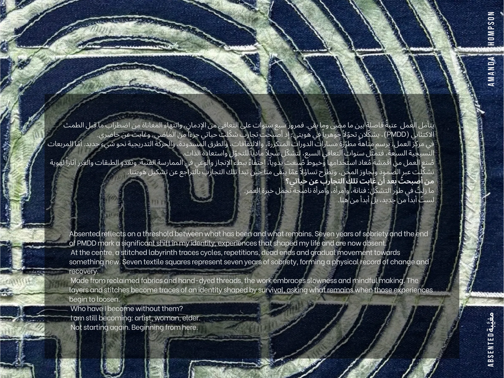

يتأمل العمل عتبةً فاصلة بين ما مضى وما بقي. فمرور سبع سنوات على التعافي من الإدمان، وانتهاء المعاناة من اضطراب ما قبل الطمث الاكتئابي (PMDD)، يشكّلان تحوّلاً جوهرياً في هويتي؛ إذ أصبحت تجارب شكّلت حياتي جزءاً من الماضي، وغابت عن حاضري.
في مركز العمل، يرسم متاهةٌ مطرّزة مسارات الدورات المتكررة، والالتفافات، والطرق المسدودة، والحركة التدريجية نحو شيء جديد. أمّا المربعات النسيجية السبعة، فتمثّل سنوات التعافي السبع، لتشكّل سجلاً مادياً للتحوّل واستعادة الذات.
صُنع العمل من أقمشة مُعاد استخدامها وخيوطُ صبغت يدوياً، احتفاءً ببطء الإنجاز والوعي في الممارسة الفنية. وتغدو الطبقات والغرز آثاراً لهوية تشكّلت عبر الصمود وتجاوز المحن، وتطرح تساؤلاً عمّا يبقى منا حين تبدأ تلك التجارب بالتراجع عن تشكيل هويتنا.
من أصبحتُ بعد أن غابت تلك التجارب عن حياتي؟ ما زلتُ في طور التشكّل: فنانة، وامرأة، وامرأة ناضجة تحمل خبرة العمر. لستُ أبدأ من جديد، بل أبدأ من هنا.
Absented reflects on a threshold between what has been and what remains. Seven years of sobriety and the end of PMDD mark a significant shift in my identity, experiences that shaped my life and are now absent.
At the centre, a stitched labyrinth traces cycles, repetitions, dead ends and gradual movement towards something new. Seven textile squares represent seven years of sobriety, forming a physical record of change and recovery.
Made from reclaimed fabrics and hand-dyed threads, the work embraces slowness and mindful making. The layers and stitches become traces of an identity shaped by survival, asking what remains when those experiences begin to loosen.
Who have I become without them?
I am still becoming: artist, woman, elder.
Not starting again. Beginning from here.
